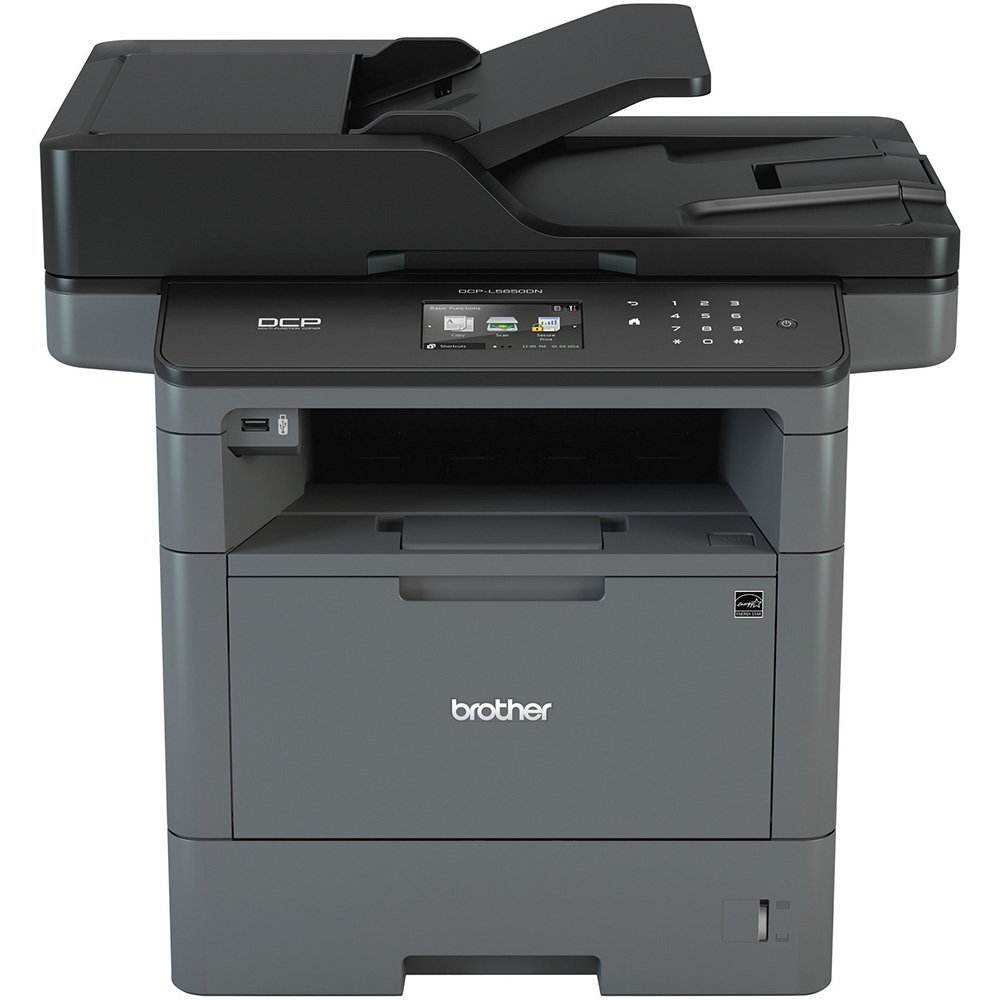

Impressora Multifunções Brother
2224,58
Impressora Multifunções Brother MFC-L5900DW Wi-Fi Preto
| Modelo | Impressora Multifuncional a Laser |
|---|---|
| Marca | Brother |
| Tipo | Multifuncional |
| Imprime frente e verso | Sim |
| Sistema de impressão | Laser |
| Conexão | Wireless/Cabo |
| Wireless | Sim |
| Resolução da impressão | 1200 x 1200 DPI |
| Capacidade da bandeja | |
| Requisitos do sistema | |
| Resolução ótica | 1200 x 1200 DPI |
| Dimensões | 486 X 495 |
| Fabricante | Bother |
| Peso Liquido | 17,3kg |
Lexmark MX421ade
2.377,67
A Lexmark MX421ade imprime até 42 ppm* e oferece funções de fax, digitalização em frente e verso e cópia, além de uma conveniente tela de toque de 4,3 polegadas.
| Modelo | MX421ADE |
|---|---|
| Marca | Lexmark |
| Tipo | Digitalização a cores/Rede/Fax/Impressão/Cópia |
| Imprime frente e verso | Sim |
| Sistema de impressão | Sim |
| Conexão | USB/Rede TCP/IP |
| Wireless | Sim |
| Resolução da impressão | (A4)/42ppm (páginas por minuto) |
| Capacidade da bandeja | 215.9 x 355.6 mm |
| Requisitos do sistema | Windows 7/8/8.1/10 Linux / Mac |
| Resolução ótica | |
| Dimensões | 467 x 399 x 429,5 mm |
| Fabricante | Lexmark |
| Peso Liquido | 2208Kg |

Max Print 1801 - DX5
38.000,00
Impressora solvente, com alta qualidade, a sua nova opção em alta resolução.
| Modelo | DX5 |
|---|---|
| Marca | Epson |
| Tipo | Impressora Solvente |
| Imprime frente e verso | Não |
| Sistema de impressão | rolo-a-rolo |
| Conexão | USB |
| Wireless | Não |
| Resolução da impressão | 1440 dpi (2880 dpi máximo) |
| Capacidade da bandeja | |
| Requisitos do sistema | |
| Resolução ótica | Não - Jato de Tinta |
| Dimensões | 2850 X 850 x 1370mm (Larg * Prof * Alt) |
| Fabricante | Epson |
| Peso Liquido | 160kg |
WorkCentre™ 3045
789,78
Multifuncional Impressora Xerox Workcentre 3045 Laser Mono
| Modelo | 3045 |
|---|---|
| Marca | Xerox |
| Tipo | Multifuncional |
| Imprime frente e verso | Sim |
| Sistema de impressão | Laser |
| Conexão | USB |
| Wireless | Não |
| Resolução da impressão | 1200 x 1200 dpi |
| Capacidade da bandeja | suporta Carta A6, A5, A4 |
| Requisitos do sistema | PC: Windows® 2003/Server/2008/Server/7/8/10/MAC |
| Resolução ótica | laser mono - preto/branco Velocidade 300mhz |
| Dimensões | 41 x 29,9 x 38,9 cm(LxAxP) |
| Fabricante | Xerox |
| Peso Liquido | 8,9 kg |
Impressora Samsung Ml 1665 Laser
384,02
Com seu tamanho compacto, design atraente e moderno, a Samsung ML 1665 complementa qualquer escritório, seja de uma empresa moderna ou de sua casa.
| Modelo | ML1665 |
|---|---|
| Marca | Samsung |
| Tipo | Impressora Laser |
| Imprime frente e verso | Sim |
| Sistema de impressão | Laser Monocromática |
| Conexão | USB |
| Wireless | Não |
| Resolução da impressão | 1.200 x 600 dpi |
| Capacidade da bandeja | A4, A5, Carta, Ofício 1, Executivo, Ofício2, Ofício, ISO B5, JIS B5, Envelope(Monarch, No.9, No.10, DL, C5) |
| Requisitos do sistema | Processador Samsung 150 MHz / Memória: 8MB / Compatibilidade com OS: Windows 2000/XP/Vista/7/2003 Server/2008 Server, Mac OS X 10.3~10.6, Various Linux OS |
| Resolução ótica | |
| Dimensões | 18,4x34,1x22,4cm(Alt x Larg x Prof |
| Fabricante | Samsung |
| Peso Liquido | 4,2kg |